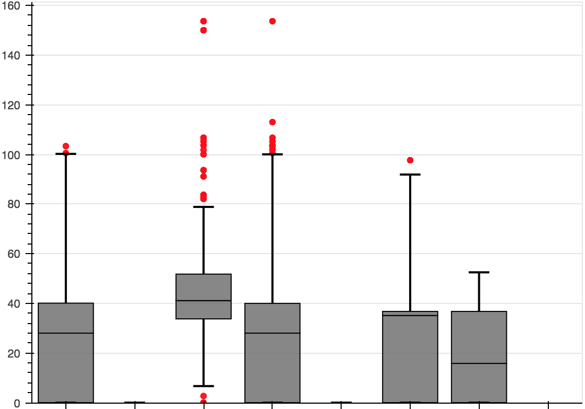
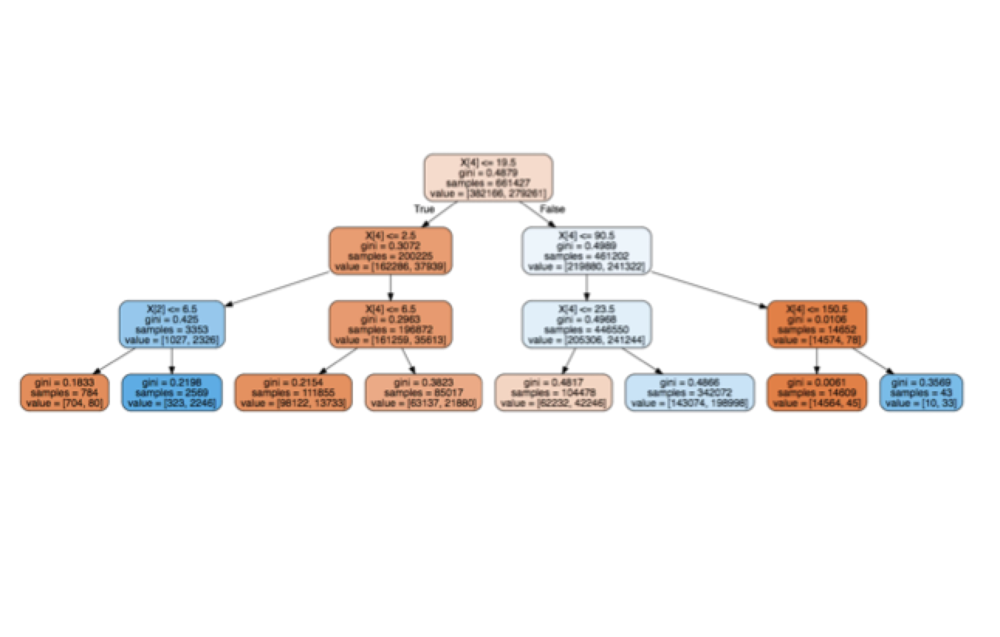

Visualizations
Amanda is well versed in creating visualization that help to understand and predict data performance. Along with creating visualizations, Amanda is well versed in data extraction, data mining, and data manipulation with large and small datasets.
Here is just a few of the visulations and predictive models Amanda is about to do:
- Linear regressions
- Histograms
- Pie charts
- Heatmaps
- QQ-plots
- Box plots
- PCA correlation
- Decision Tree Regressions




